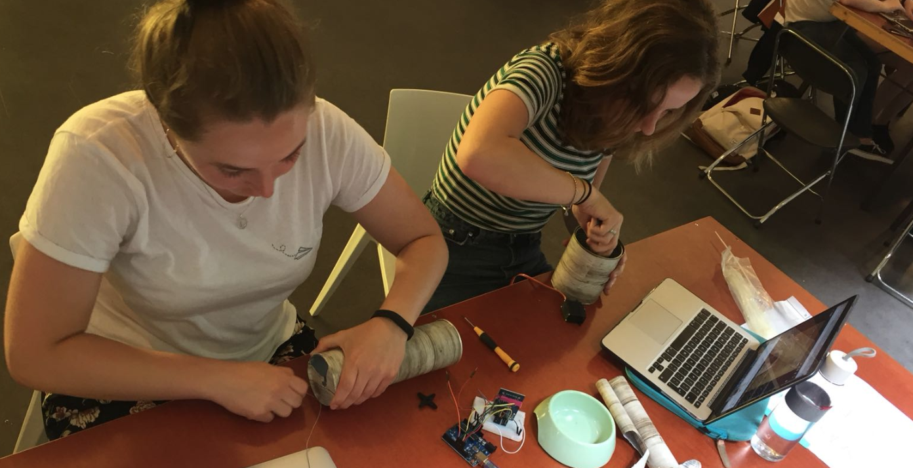
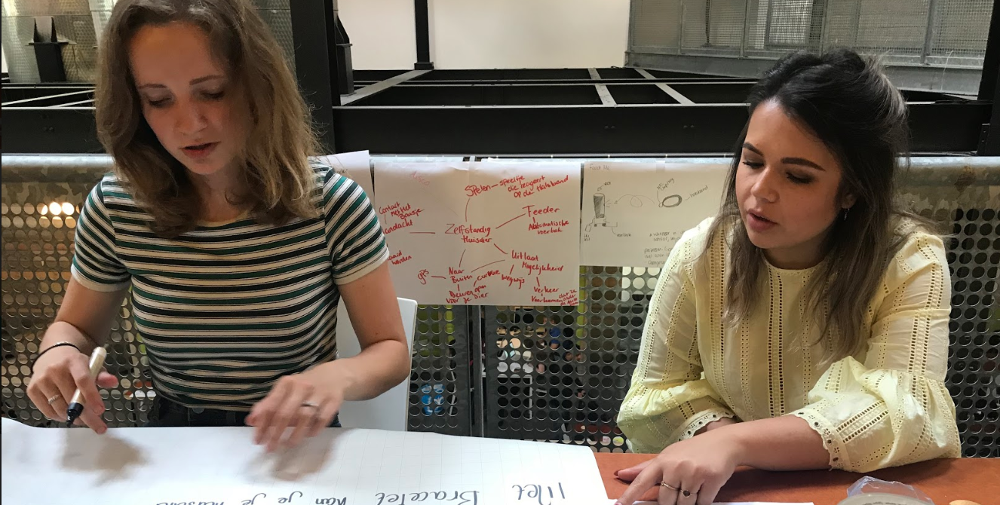
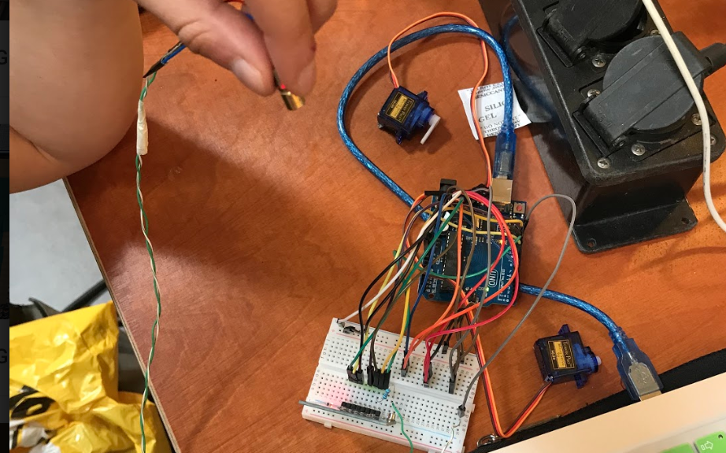
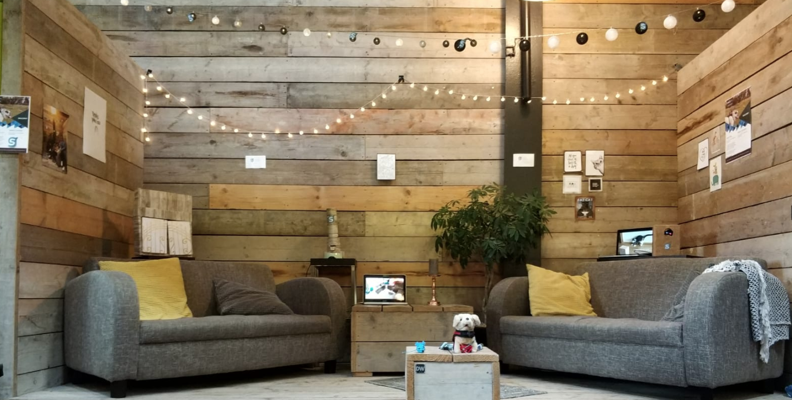

Vandaag was de eerste dag in Zoetermeer. We gingen van start met de HCI weken. Daar aangekomen was het wachten totdat iedereen aanwezig was en toen konden we beginnen met de debriefing van de twee weken die ons te wachten stonden. Chris vertelde wat we gingen doen, wat we moesten opleveren en hoe we dit als groep konden realiseren. Daarna werden we doorgestuurd naar een ruimte waar de groepsindeling zichtbaar was. Ik was bij Wearables ingedeeld, mijn eerste keus gelukkig. Nadat we als groep elkaar hadden gevonden gingen we van slag met het bedenken van een concept voor wearables. We begonnen per persoon een mindmap te maken van ideeën voor concept. Ik maakte een mindmap met de doelgroep, soort wearable en onderwerp wat we wilden aanhalen. Toen gingen we elke mindmap bekijken en maakten we daar een gezamenlijke mindmap van. De ideeën zijn toen besproken en uitgewerkt nadat ieder voor zich research had gedaan. Ik had zelf op Google gezocht voor ‘wearables for animals’ en daar aardig wat van gevonden waardoor ik ook met goede ideeën kon komen. Toen kwam het laatste groepslid erbij, die had wat vertraging. Toen hebben we met haar opnieuw brainstorm gedaan en zijn daar wel ongeveer dezelfde ideeën uitgekomen; namelijk een wearable voor huisdieren. Toen hebben we nog een keer research gedaan en toen het concept gespecificeerd naar het zelfstandig maken van een huisdier met een wearable. Toen zijn er conceptaanpassingen gedaan en deze werden geschetst. Daarna is er een overzicht gemaakt per groepslid wat iedereen qua technologie zou meenemen om dingen uit te proberen voor het concept.

De tweede dag in Zoetermeer. Vandaag werd er gestaakt door het streekvervoer waardoor ik wat later aanwezig was in het Innovation Lab. Toen ben ik gelijk naar mijn groepje gegaan (debriefing was al voorbij). Daar waren ze al bezig met onze dagelijkse ochtendmeeting, namelijk rond de to do/doing/done list staan en elk vertellen wat we gisteren gedaan hadden en wat we vandaag gingen doen. Ik heb dat verteld en toen zijn onderling taken verdeeld. Ik heb het maken van het storyboard op me genomen. Het storyboard moest een globale uitwerking zijn van het concept, nog niet heel erg gedetailleerd. Dit omdat ons concept nog niet was uitgewerkt als prototype en we eerst wat dingen gingen uitproberen qua coderen. Drie andere groepsleden gingen starten met het uitproberen van sensors en codes. Ik begon zelf met het beschrijven van het concept in een verhaalvorm, om zo een goed mogelijk idee te krijgen van de visualisatie van het storyboard. Dit was wel redelijk snel af. Het visualiseren van het storyboard was wel lastiger, omdat we nog niet echt concreet hadden hoe het prototype eruit ging zien en hoe het exact werkte. Daar was ik dan ook wat langer mee bezig, mede omdat ik twijfelde tussen het maken van een online storyboard of op papier schetsen met potlood. Uiteindelijk is dat goed gelukt en waren de andere groepsleden er ook tevreden over. Het storyboard is nog wel een concept, het kan dus veranderen naar de mate hoe het prototype verandert. Daarna heb ik even een pauze genomen en ben toen informatie gaan verzamelen over NFC-tags voor ons prototype. Ook heb ik nog aan Chris en Danica wat dingen gevraagd over hoe dat in zijn werk ging en waar we er eventueel een extra tag konden bestellen.

De derde dag was het best wel een warme dag om van 9:00 tot 17:00 te zitten aan school, maar we waren wel productief vandaag. Het eerste prototype van de voederbak is af! We begonnen na de algemene briefing door Chris met het verder werken van de voederbak en de laser. Ik nam het prototype van de voederbak op me samen met twee andere groepsleden. De Pringles bus was al gemaakt dus nu begon ik met het perzikenblik terwijl Lisa begon met het maken van de verbindingen voor Arduino in de Pringles bus. Het perzikenblik was wat meer werk om te doen en was ook lastiger om te bewerken met een stanleymes. Heb daarom drie kleine sneeën daaraan overgehouden, maar met een mooi resultaat. Toen alles op maat gemaakt was samen met de Pringles bus paste het mooi op elkaar. Daarna heb ik de servomotor vast gemaakt met zip ties. Dat was wel even een werk, omdat je hand niet volledig in het blik past en de randen ook wel scherp waren. Maar dat is uiteindelijk allemaal gelukt. Daarna hebben we het samen verbonden met elkaar en ook met de Arduino. Toen was het resultaat dat het werkte gelukkig! Het was heel gaaf om te zien dat het eerste prototype heeft gewerkt. Tussendoor hadden we ook nog een gastspreker van het bedrijf Next Empire, wat heel interessant was om naar te luisteren. Ze hebben hele gave cases.

De vierde dag in Zoetermeer! Het eerste product was af, de voederbak, nu aan de slag met de volgende ideeën. Aan het begin heb ik nog even gewerkt aan de finishing touch voor de voederbak om alles zo mooi mogelijk en goed werkend te maken. Het was noodzakelijk om de voederbak wat steviger te maken zodat de Arduino beter paste. Middags ben ik op zoek gegaan naar een nieuw concept om de tweede week te proberen. We hadden al een aantal ideeën met elkaar besproken. Daar was ik wel de rest van de middag zoet mee. Ik heb verschillende concepten opgezocht en deze ook voorgelegd aan de groepsleden. Daarnaast heb ik de codes van de concepten opgezocht. Toen ik daar een beetje mee klaar was heb ik een poging gedaan om te beginnen met het maken van de film van de HCI weken van ons groepje, alleen liep Adobe After Effects telkens vast dus dat was wat lastiger.
Vandaag alweer op de helft! De tijd gaat best snel als je zo bezig bent. Vandaag zijn de andere groepsleden verder gegaan met de laser en weer andere met de deur voor het huisdier. Ik ben zelf gestart met het bedenken van de setting die we als groep wilden gebruiken voor de expositie. Ik heb daar toen met de groepsleden overlegd en we kwamen erachter dat het handig was als we een beetje een donkere ruimte hadden en dat inrichtten als een huiskamer. Ik heb hiervoor een plattegrond getekend met de verwachtingen van onze plek. Daarnaast ben ik gaan kijken wat we nodig zouden hebben om het zo leuk en mooi mogelijk te maken, de plek. Ik heb toen een lijstje gemaakt met de spullen die nodig waren en dit ook voorgelegd aan de groepsleden, om te kijken wat iedereen thuis had liggen om evt. mee te nemen. Toen heb ik even een korte pauze genomen tussen de middag en ben even lekker buiten gaan zitten. Daarna ben ik naar de receptie gelopen om hier te vragen of we een paar banken mochten gebruiken die beneden stonden en of we ook de planten mochten lenen daarvoor. Dat mocht gelukkig. Toen daarna heb ik de plattegrond afgetekend en deze opgehangen naast ons scrum papier. Daarna ben ik verder gegaan met het verzamelen van kleine filmpjes voor de expositie film.
De tweede week is van start gegaan. We wilden als groep nu een uiteindelijk nieuw concept hebben. Na een aantal ideeën bekeken te hebben besloten we om lichtjes te maken op een wearable harnas voor de kat/hond die aangingen in het donker. Ik besloot om van start te gaan daarmee omdat de rest nog met de andere prototypes bezig waren. Ik heb toen eerst Google geraadpleegd en daarna ook nog even het groepje naast ons, die waren ook bezig met ledstrips (deze wilden we gaan gebruiken). Voordat ik met de ledstrips startte heb ik eerst uitgevogeld hoe het werkt van donker naar licht. Ik heb toen twee leds gepakt en die zo geprogrammeerd dat de ene led als donkerheidssensor diende en de andere led aanging als deze sensor dus donker detecteerde. Hier was ik wel een volle dag mee bezig om dit uit te zoeken.
De zevende dag. Na de standaard briefing en announcements van Chris had ik er weer zin in om er tegenaan te gaan. Ik zat nog volop in het nieuwe concept en kon dus nog wel even aan de slag. Vond ik wel fijn, want dan had ik gelukkig iets om naartoe te werken. Kisha uit mijn groepje had ledstrips mee die ik kon gebruiken om mee te oefenen met coderen. Deze ledstrips waren al gesoldeerd waardoor het makkelijker was om mee te experimenteren in plaats van gelijk al te beginnen met solderen. Ik heb eerst geprobeerd om de ledstrips aan te krijgen met code en ook gekeken naar de verscheidenheid van kleuren. De ledstrips moesten namelijk onder het harnas terechtkomen dus daarom was het noodzakelijk dat deze ook een fel licht hadden dat goed zichtbaar was. Toen dat gelukt was heb ik gekeken hoe de strips onder het harnas moesten komen. Het harnas wat ik in gedachten had heb ik opgezocht op Google en kwam er toen achter dat wij ook wel een soort dierenharnasje thuis hadden liggen dus die kon ik mooi gebruiken.
En het is alweer de helft van de tweede week, dag acht. Vandaag is de laser afgerond! Nog een paar dingen voor de finishing touch maar hij werkt. Ik ben persoonlijk verder gegaan met de leds. Dit keer ben ik begonnen met de ledstrip aan te passen aan de LDR-sensor. Dit was in het begin nog wel even moeilijk. Ik heb eerst de LDR-sensor aangesloten maar kwam hiermee in de knoop. Ben toen naar Tim gegaan en die heeft me zo geholpen met de code en de breadboard verbinding dat het gelukkig werkte. Toen dat eindelijk af was, na wat foutjes en telkens opnieuw proberen was de dag alweer bijna voorbij. Ik heb toen aan het eind nog de lichtjes aangepast maar ook de helderheid van de sensor. Omdat we niet een volledig donkere ruimte hadden toegewezen gekregen (en dat ook niet echt kon met onze huiskamer setting) besloot ik dat de sensor moest reageren op schaduw zodat het voor de demonstratie/expositie wat makkelijker te laten zien was.
Dag negen. Deze dag moest alles af zijn zodat er vrijdag bij de expositie niks meer fout kon gaan dat iets opeens niet werkte of dat er geen tijd meer was om iets af te maken. Ik ben ’s ochtends samen met Lisa begonnen aan het bekijken van de opties om het breadboard te vervangen door de draadjes te solderen. Dit was nog wel lastig. Chris wees ons eerst een printplaat toe wat uiteindelijk toch niet nodig was om te gebruiken. In die tussentijd waren we wel lang bezig met het uitzoeken van de werking van de printplaat omdat je ook zelf de verbindingen zoals GND en 5V moest solderen. We hebben daarvoor uiteindelijk geen printplaat gebruikt, maar meerdere draadjes aan elkaar gesoldeerd en deze dan uiteindelijk in een punt op het Arduino bord gesoldeerd. Zoals meerdere GND met elkaar verbinden door de punten aan elkaar te solderen. Dit kostte nog wel even tijd. Mede omdat toen we klaar waren ik het wilde testen door aan het harnas vast te maken maar dit zorgde ervoor dat de gesoldeerde draadjes soms losgingen. Ik was dus de een na laatste dag nog wel even bezig met het solderen van de ledstrips.
Woehoeee! De laatste dag! Aan de ene kant jammer, want het waren twee supergave weken, aan de andere kant blij dat we nu half vakantie (alleen nog HCI portfolio) hebben. Vandaag was er niet superveel te doen voor ons groepje. We zijn verplaatst naar beneden en hebben daar onze huiskamer ingericht. Dit duurde niet lang en we waren hier dus snel klaar mee. Van de deur moest nog een ding gesoldeerd worden achteraf wat gelukkig nog mogelijk was. Toen wij hiermee klaar waren ging ieder voor zichzelf een beetje werken omdat er niet veel werk meer was. En toen was het drie uur, eindelijk pizza eten. Dat was wel genieten, buiten in de zon met lekker pizza voordat de expositie zou beginnen. Toen om vier uur begon de expositie. Dat was wel heel gaaf!! Mensen vonden onze producten heel leuk, zeker ook omdat wij meerdere dingen hadden gemaakt. Toen ik even een rondje ging lopen was het ook echt supergaaf om de andere projecten te zien waar iedereen zo keihard aan gewerkt had. Kortom, het was een geslaagde expositie, maar zeker twee geslaagde weken!!
